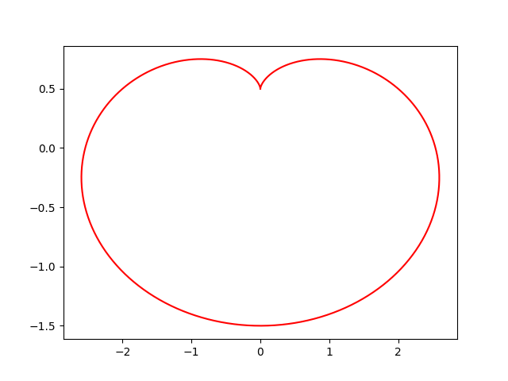

René Descartes
模块
- numpy ~> 一大堆数学公式
- matplotlib ~> 著名的绘图库
思路
- 输入图表数据
- 保存并显示图标
示例

代码
# 引入 numpy ~> 提供三角函数
import numpy as np;
# 引入 matplotlib ~> 图表绘制
import matplotlib.pyplot as plt;
# 在 0 ~ 2*pi 间取 1024 个数
t = np.linspace(0, 2*np.pi, 1024);
# x=a*(2*cos(t)-cos(2*t))
x = (2*np.cos(t) - np.cos(2*t))/2;
# y=a*(2*sin(t)-sin(2*t))
y = (2*np.sin(t) - np.sin(2*t));
# 在 plt 上绘制
plt.plot(y, x, c = 'r');
# 保存图片
plt.savefig('descartes.png');
# 展示图片
plt.show();